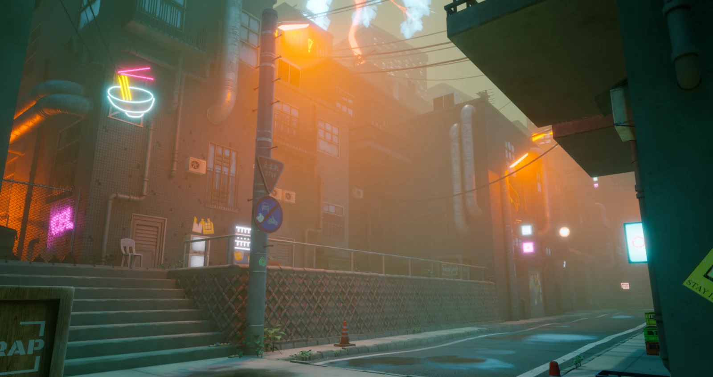
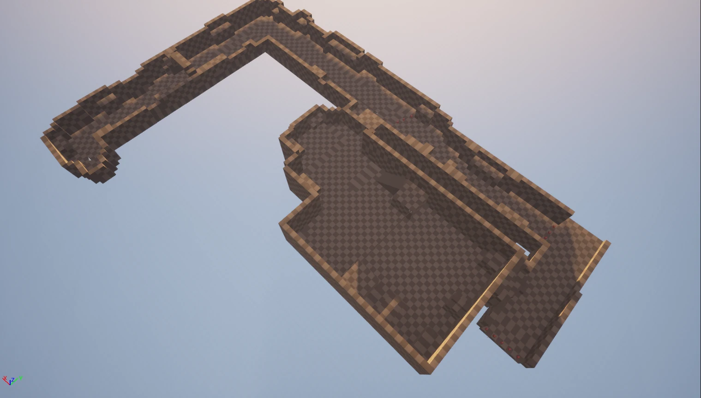
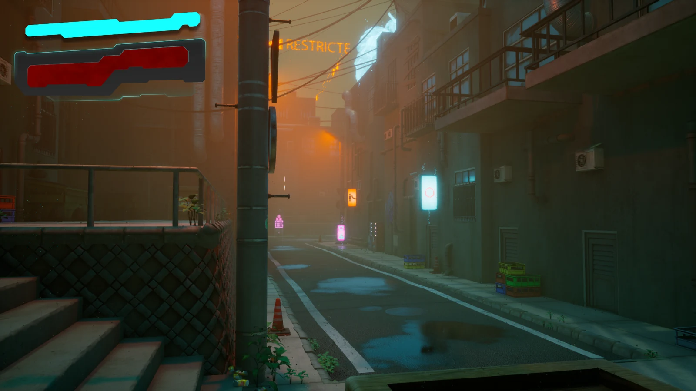
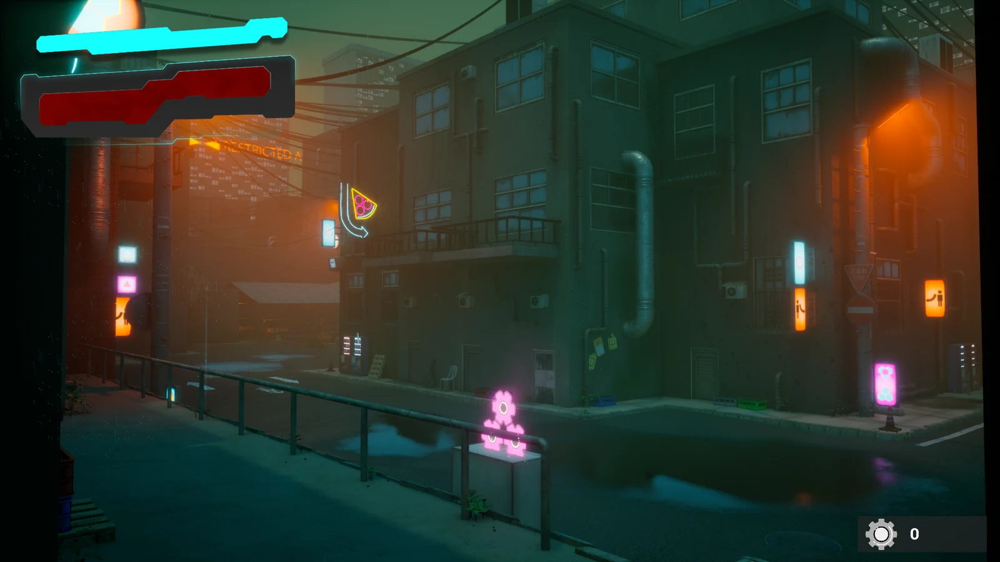
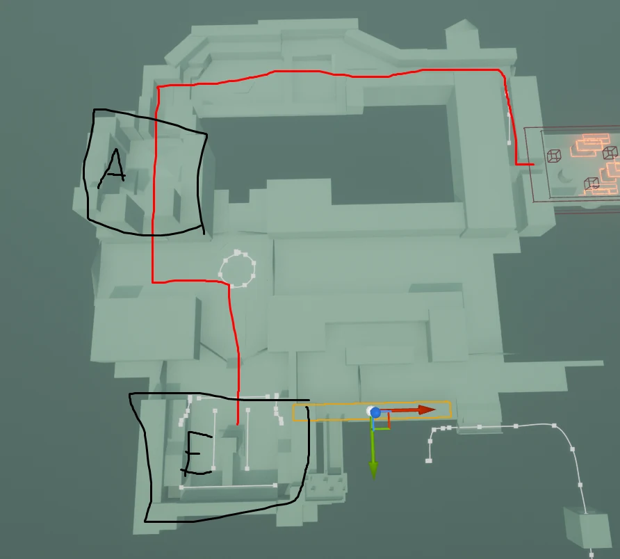
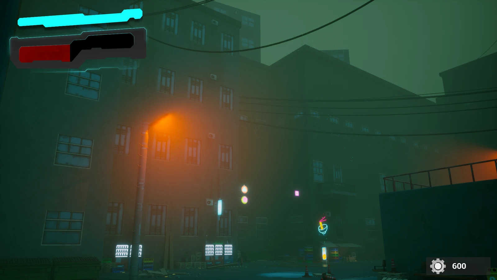
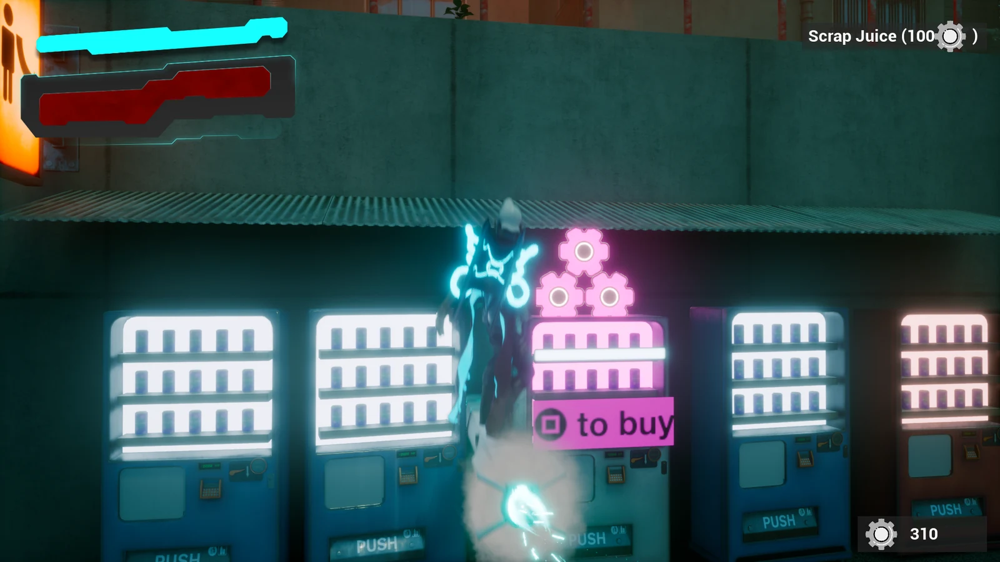

Rocket Rider
Game Project (PlaygroundSquad) for PlayStation 5
▶ My Contributions
1. Researched and sketched level designs and concepts based on Japan.
2. Designed and altered several level sections, with the intention of creating a fun environment to move around in.
3. Placing out important gameplay mechanics in the level sections, such as battle arenas, destructible boxes, and vending machines.
4. Balancing the arena sections of the game, with enemy and wave totals.
5. Contributed to the level art by helping to plop down props and buildings.
6. Created the UI when interacting with vending machines to tell the product name and cost.
7. Consistent playtesting, reporting many critical bugs and crashes, and providing feedback in the process.
▶ Contribution Breakdown
1. Researched and sketched level designs and concepts based on Japan.
It was decided fairly early with the initial meetings of the game that the visuals would be heavily based on a neo-city aesthetic, which led us to Tokyo in particular for layout inspiration. Another designer and I started scouring Google Maps via Street View and started drawing up our initial concepts for level segments. Other games like Hi-Fi Rush were also used for inspiration, as we were going for a similar gameplay style and flow, which required fairly lengthy and high-paced levels. The idea was to make several segments and then connect them into a larger level. I did most of these on pen and paper and also sometimes via Photoshop. Most of these concepts ended up being heavily altered by me and the other designers as our visions for the game changed.

Figure 1. One of the initial level segment blockouts and one of the few to remain mostly unchanged in the final build of the game, layout-wise. Made by me, with the latter half of it (the square area) a concept by another designer.
2. Designed and altered several level sections, with the intention of creating a fun environment to move around in.
After me and the other designer, with input from the other team members, had produced a few dozen segments, we settled on a few to focus on and began to assemble them separately from each other in Unreal Engine, primarily using the Cube Grid Tool. This was a lengthy and difficult process of the game, since the levels did not really align with the feel we wanted for the game, and a lot of time was spent adjusting and trimming any unnecessary content. It was a tough line to walk, since we needed long level segments to make use of the movement and flow we were going for, but they also could not be too long since it would overwork the artists, and we simply didn't have enough time to polish everything. The initial start segment created by me (Figure 1) was one of the only ones that ended up being unchanged for the most part, while every other piece received major adjustments.


Figures 2 and 3. This shows the finished product of Figure 1, after some small adjustments and a beautiful art transformation.

Figure 4. An image quickly made to help us decide how the final sections of the game should pan out, as we had multiple branching paths at that point. This ended up being chosen, but heavily altered in the final build of the game.
3. Placing out important gameplay mechanics in the level sections, such as battle arenas, destructible boxes, and vending machines.
I was primarily responsible for placing down a lot of important objects in the game and their locations. Battle arenas were our main combat sections and were placed with even spacing in mind and were also designed with big open areas to allow the player to maneuver while fighting enemies. Scrap boxes were our primary collectible and were placed all over the level segments, most of them required the player to pay somewhat attention to their surroundings. A few were placed in obvious locations since the player also needed to be aware they existed in the first place. Finally, vending machines were our main way to purchase healing items and were placed between arenas. None of them were placed before the first arena since there is no way to take damage prior.
4. Balancing the arena sections of the game, with enemy and wave totals.
The arena sections were designed using a wave-based system. Eliminating an X amount of enemies progresses you into the next wave and so-forth. We had two main enemies: a tanky gorilla and a flying bee enemy. The waves were structured to gradually get harder over time and focused on introducing the flying bee enemy first because of their lower health pools. The final arena section throws multiple types of each on you.
5. Contributed to the level art by helping to plop down props and buildings.
During the final days of development, I began assisting our fellow artists with plopping down buildings and props throughout the entire game since the bulk of the level design was done at this point. I would also go on to add invisible walls and ceilings to the game as well, since it was very easy to use the game's movement to escape. I went through the game several times and constantly adjusted it to prevent any awkward bumps into invisible walls. Another thing I focused on was making certain props not interact with physics or the camera to provide a smoother movement experience in a game that really needs it.

Figure 5. Examples of some of the level artwork I did, mainly by plopping down buildings and the occasional prop.
6. Created the UI when interacting with vending machines to tell the product name and cost.
Using the Unreal HUD Widget tools and simple blueprints, I made a simple display appear in the top right when interacting with vending machines (the way to heal yourself in the game), displaying the product you are purchasing and the scrap (our currency) cost of it. We already had a counter keeping track of scrap earned, but there was no way to indicate what you were actually buying and for what cost. It was planned to get a proper art makeover, but due to time constraints, it never did, and so the look seen in Figure 6 stayed in the final build. I also made a "Danger!" HUD element appear when a battle arena started, but this was eventually removed since it was deemed a bit unnecessary due to the obvious barriers appearing everywhere and the sound effects.

Figure 6. The top right shows the UI I was responsible for, based on the existing scrap meter in the bottom right.
7. Consistent playtesting, reporting many critical bugs and crashes, and providing feedback in the process.
Many hours were spent playtesting most aspects of the game. Unlike Level Design, which was a designated role I had from the beginning of the project, Quality Assurance kind of just became my thing after a few weeks, and I played a lot. Reported tons of issues and got vital crashes fixed, a lot of them tied to our destruction system used on scrap boxes and enemy AI. A lot of the fixing was done myself, such as adjusting splines in the levels to make our rail grinding movement smoother, patching up holes in the geometry, and more.